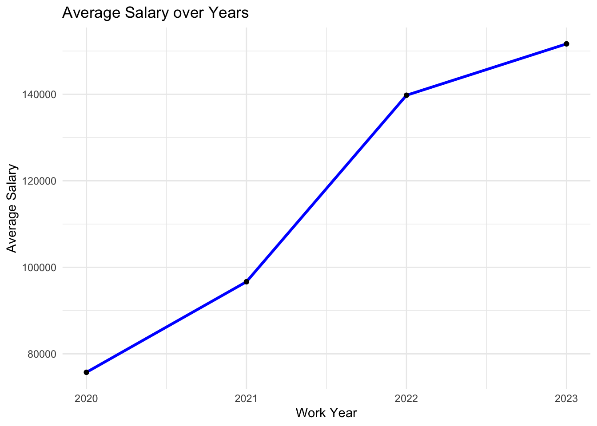
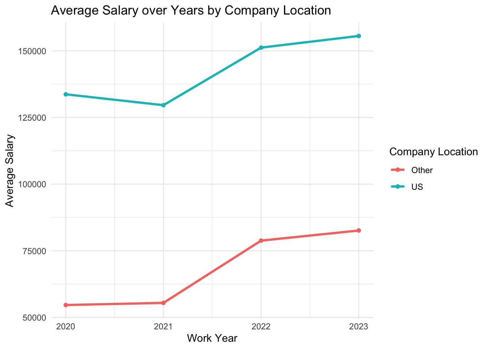

| Variable | Class |
|---|---|
| work_year | integer |
| experience_level | character |
| employment_type | character |
| job_title | character |
| salary | integer |
| salary_currency | character |
| salary_in_usd | integer |
| employee_residence | character |
| remote_ratio | integer |
| company_location | character |
| company_size | character |
Data Analysis on Salary of Data Engineer
Introduction
We live in a world where every piece of data significantly influences human behavior. Consequently, data scientists and data analysts are essential for interpreting and generating insightful information, enabling organizations to make data-driven decisions. However, data originates from diverse sources with varying formats and structures, complicating immediate utilization. This challenge highlights the vital role of data engineers. They design and implement systems that collect, manage, and transform raw data into formats suitable for analysis. Positioned at the initial step of the data analysis pipeline, the role of a data engineer is indispensable. This is why data engineers are in high demand across various sectors like: finance, retail and technology.
In this report, we will examine the salary trends for data engineers and analyze other factors influencing their income over the past four years from 2020 to 2023.
The data used for this analysis is 2023 Data Scientists Salary from Kaggle, whose author is Henry Shan.
Initial Data Analysis
Before commencing any analysis, we will review the metadata. The table below highlights every available variables in the data, as well as giving a short interpretation of each variable.
| Variable | Explanation |
|---|---|
| work_year | The year the salary was paid. |
| experience_level | The experience level in the job during the year. EN: Entry-level / Junior MI: Mid-level / Intermediate SE: Senior-level / Expert EX: Executive-level / Director |
| employment_type | The type of employment for the role. PT: Part-time FT: Full-time CT: Contract FL: Freelance |
| job_title | The role worked in during the year. |
| salary | The total gross salary amount paid. |
| salary_currency | The currency of the salary paid as an ISO 4217 currency code. |
| salaryinusd | The salary in USD. |
| employee_residence | Employee’s primary country of residence during the work year as an ISO 3166 country code. |
| remote_ratio | The overall amount of work done remotely. |
| company_location | The country of the employer’s main office or contracting branch. |
| company_size | The median number of people that worked for the company during the year. |
Data format check
At the first glance from Table 1, variables such as: experience_level, employment_type. job_title, etc. are initially formatted as character, which makes the summary statistics generated for these variables meaningless.
To deal with this, we will convert all character variables into factor variables, then re-generate the data summary statistics. Moreover, since work_year values are integer ranged from 2020 to 2023, we also convert it into factor variable.
Missing values
We then examine the data for any missing values.
| Variable | Number of missing values |
|---|---|
| work_year | 0 |
| experience_level | 0 |
| employment_type | 0 |
| job_title | 0 |
| salary | 0 |
| salary_currency | 0 |
| salary_in_usd | 0 |
| employee_residence | 0 |
| remote_ratio | 0 |
| company_location | 0 |
| company_size | 0 |
As shown in Table 2, the data is complete, with no missing values present.
Filtering data engineer role
[1] Data Engineer Big Data Engineer BI Data Engineer
[4] Software Data Engineer Azure Data Engineer Marketing Data Engineer
[7] Cloud Data Engineer Lead Data Engineer Principal Data Engineer
93 Levels: 3D Computer Vision Researcher AI Developer ... Staff Data ScientistThere are several specific data engineer role in the data. However, for this analysis, we will only concentrate on data engineer role in general. And therefore, we will filter out Data Engineer value from job_title.
Re-group company_location variable
Moreover, we will re-group company_location values to US and Other for later comparison of salary between US organisations and foreign organisations.
Filtering full time role
Finally, we then filter from employment_type to Full time role only.
Exploratory Data Analysis (EDA)
Summary statistics
We use summary() to get the summary statistics of all variables. Moreover, since we have filtered to only one value for job_title and employment_type, we will not perform summary statistics for these 2 variables.
Numerical variables
salary salary_in_usd remote_ratio
Min. : 12000 Min. : 12000 Min. : 0.00
1st Qu.: 102100 1st Qu.:102000 1st Qu.: 0.00
Median : 138750 Median :135000 Median : 0.00
Mean : 156904 Mean :143062 Mean : 42.33
3rd Qu.: 177600 3rd Qu.:175000 3rd Qu.:100.00
Max. :4450000 Max. :324000 Max. :100.00 Given that the salary for the data engineer role is paid in the currency of the company’s location, we will use salary_in_usd for our analysis.
As shown in Table 3, the annual salaries for data engineers range from 12,000 USD to 324,000 USD, with a mean salary of approximately 143,000 USD. This significant disparity in pay can be attributed to various factors, including the location of the role and the data engineer’s level of experience.
Factor variables
work_year experience_level salary_currency employee_residence company_size
2020: 15 EN: 66 USD :922 US :903 L: 76
2021: 36 EX: 51 GBP : 54 GB : 53 M:953
2022:487 MI:202 EUR : 49 ES : 21 S: 8
2023:499 SE:718 INR : 6 CA : 8
TRY : 2 GR : 7
AUD : 1 IN : 6
(Other): 3 (Other): 39
company_loc
Other:131
US :906
As we can see from Table 4, for both company_loc as well as employee_residence, highest frequency values are US. This may happen due to a few reasons:
Large Tech Industry Presence: The United States is home to many of the world’s largest technology companies, such as Google, Apple, Microsoft, and Amazon. These companies often have significant demand for data engineers and other data-related roles, leading to a higher concentration of such jobs in the US.
Higher Salaries and Better Opportunities: Salaries for tech roles, including data engineers, tend to be higher in the US compared to other countries. This attracts talent from around the world to seek employment in the US, contributing to the higher frequency of employees residing in the US.
Headquarters Location: Many multinational tech companies have their headquarters in the US. As a result, their main offices are located there, increasing the frequency of the US as the company location.
Moreover, most of the data engineers for this data is currently in SE or Senior-level role.
Average Salary Trend

As we can see from Figure 1, there is a consistent upward trend in the average salary for data engineers from 2020 to 2023.
The average salary has increased significantly each year, indicating a growing demand for data engineers and possibly an increasing recognition of the value they bring to organizations.
Average Salary over Years by Company Location

From Figure 2, we can see that there is a huge gap in salary of data engineers between US organisations and foreign organisations. This may reflect the higher cost of living in the US, greater demand for tech talent, or more competitive salary packages offered by US companies.
US: Salaries in the US have shown a more stable and slightly upward trend overall. However, there is a slight decrease from 2020 to 2021, followed by a significant increase from 2021 to 2022, and a continued rise into 2023.
Other Locations: Salaries in other locations have followed a similar pattern. There is a slight increase from 2020 to 2021, a significant jump from 2021 to 2022, and a continued rise from 2022 to 2023.
Average Salary over Years by Experience Level
- Experience Level Impact:
- Executive-level (EX): Executive-level data engineers see the highest salaries, with a notable peak around 2022, indicating high rewards for top-tier experience and leadership roles.
- Senior-level (SE): Senior-level salaries show a steady upward trend, reflecting the growing value of experienced professionals.
- Mid-level (MI): Mid-level salaries have been relatively stable with a slight increase, indicating moderate growth in compensation for this experience tier.
- Entry-level (EN): Entry-level salaries have seen a substantial increase from 2020 to 2022, though there is a slight decline in 2023. This could suggest a correction or stabilization in entry-level hiring and compensation.
Overall Insights:
- Growth in Salaries: Across the board, salaries for data engineers have been increasing, with notable differences based on location and experience level.
- Location Impact: The US remains a top-paying region for data engineers, reflecting its robust tech industry and higher living costs.
- Experience Matters: Experience level significantly impacts salary, with executive and senior-level positions commanding the highest pay, while entry-level positions show growth but also some variability.
These trends highlight the dynamic nature of the data engineering field, with increasing recognition of the importance of data professionals and a competitive job market driving up salaries.
tar_read(summary_lm)
Call:
lm(formula = salary_in_usd ~ work_year + experience_level + company_loc,
data = de_data_clean)
Residuals:
Min 1Q Median 3Q Max
-129786 -31325 -4639 26761 160214
Coefficients:
Estimate Std. Error t value Pr(>|t|)
(Intercept) 33859 13312 2.544 0.01112 *
work_year2021 4819 14841 0.325 0.74547
work_year2022 15520 12937 1.200 0.23052
work_year2023 18973 13026 1.457 0.14554
experience_levelEX 102367 9056 11.304 < 2e-16 ***
experience_levelMI 21753 6841 3.180 0.00152 **
experience_levelSE 48244 6305 7.652 4.54e-14 ***
company_locUS 57163 5080 11.252 < 2e-16 ***
---
Signif. codes: 0 '***' 0.001 '**' 0.01 '*' 0.05 '.' 0.1 ' ' 1
Residual standard error: 47980 on 1029 degrees of freedom
Multiple R-squared: 0.3175, Adjusted R-squared: 0.3129
F-statistic: 68.38 on 7 and 1029 DF, p-value: < 2.2e-16